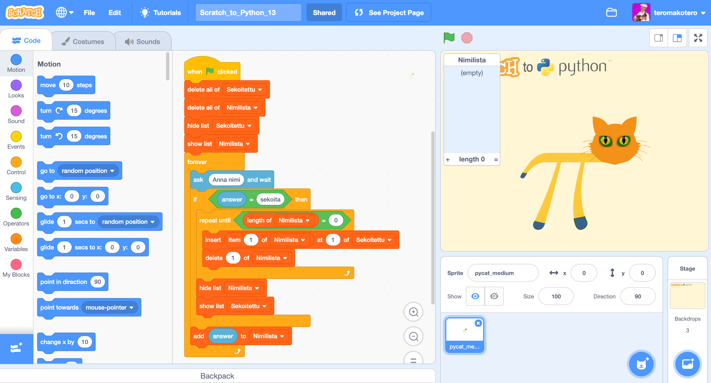
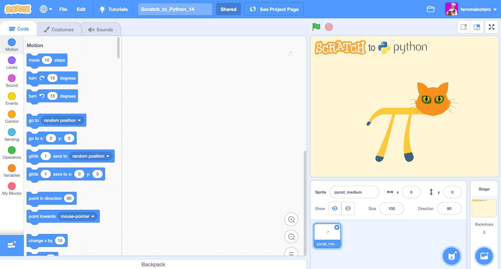

List Challenges
Scratch_to_Python_12
In this challenge you will learn how to make a shopping list with Scratch. The program asks: "What do you want?" And adds the item to the list. The program ends if you write "end".
In this challenge, we use the Player Learning method. You can come up with a solution through trials and mistakes. The method of trial and error is one of the basic methods for solving a problem.
Instructions
- Create the list "Shopping list".
- Make the program ask the user "What do you want?" And add the goods that the user gives to the list until the user writes "end" and the program ends.
- To solve the task, you need at least one loop, a condition statement, a "ask and wait" block, block from the Operations Blocks, which informs if the answer was "end" and List blocks.
Challenge 12
You come to the challenge either by clicking on the heading "Challenge 12" or on the picture of the challenge.
Link to challenge Scratch_to_Python_12 file.Video showing the solution to the Scratch_to_Python_12 challenge
Scratch_to_Python_13
In this challenge you will learn how to debug, ie. find and correct errors in a code. The program should ask for a name and when you write "mix," it should mix the names in a random order. There are errors in the code that should be corrected.
In this challenge, we use the Player Learning method. The feeling of frustration and irritation is an important part of the learning process.
Instructions
- The names should be in random, not reverse, order when writing "mix".
- You need the block "pick random" in the Operators Blocks. Consider how to consider the changing length of the list when deciding random numbers.
- The program continues to request names even if it should end after the names have been mixed.
Haaste 13
You come to the challenge either by clicking on the heading "Challenge 13" or on the picture of the challenge.
 Link to challenge Scratch_to_Python_13 file.Video showing the solution to the Scratch_to_Python_13 challenge
Scratch_to_Python_14
In this challenge, you will create a program that sorts words that the user gives to lists based on their length. In the beginning, only the contents of the "Word" list are visible. When the user writes "end", the program displays the sorted lists and stops asking for words.
In this challenge, we use the Player Learning method. The feeling of frustration and irritation is an important part of the learning process.
Instructions
- Make five lists: "Words", "2 or fewer letters", "3 letters", "4 letters" and "5 or more letters".
- Use the "hide list", "show list", "delete everything of list" and "add to list" blocks from List Blocks to solve the task.
- You need the blocks "ask and wait" and "answer" from the Sensing Blocks.
- You need the "length of list" blocks as well as different mathematical operators, such as equal to, less than and larger than from the Operations Blocks, with which you can measure the length of the given words and indicate to which list they go.
- You also need a loop and conditions.
Challenge 14
You come to the challenge either by clicking on the heading "Challenge 14" or on the picture of the challenge.
 Link to challenge Scratch_to_Python_13 file.